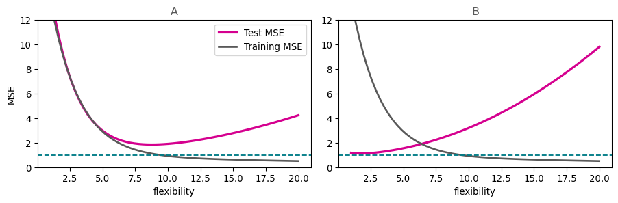

Problem set 1: The prediction framework
STA 363 | Posted August 28 | Due Friday, September 4
Submit a PDF on Canvas. If you work with classmates, please indicate this at the top of your document. Additionally please cite all other sources including AI.
1. Naming the pieces
A hospital wants to flag, at the moment of discharge, which patients are likely to be readmitted within 30 days.
- What is \(Y\)? Is this regression or classification?
- Name three predictors that would plausibly be available at discharge.
- What does one row of this data set represent?
- Write the model we assume relates \(Y\) to \(X\), and say what each symbol means.
2. Reducible and irreducible
For each change, say whether it can reduce the reducible error, the irreducible error, both, or neither. One sentence each.
- Collecting 50,000 more patients rather than 5,000.
- Adding a predictor for whether the patient lives alone.
- Replacing logistic regression with a neural network.
- Recording blood pressure with a better cuff.
3. Prediction or inference
Label each P or I (prediction or inference).
- Does this discharge medication reduce readmission?
- Which 200 patients should the nurse call tonight?
- How much does living alone raise readmission risk?
- Will this patient be readmitted?
4. Reading a test error curve
The dashed teal line is \(\text{Var}(\varepsilon)\) in both panels.
- In each panel, roughly what flexibility would you choose, and why?
- In which panel is the true \(f\) closer to linear? Say how you can tell.
- In panel A at flexibility 20, the gap between the magenta curve and the dashed line has two sources. Name them.
- The grey curve never turns upward in either panel. Explain why that is guaranteed rather than a feature of these particular data.
5. A colleague’s claim
I fit twelve models and picked the one with the lowest MSE on my data. It gets an MSE of 0.4, which beats everything published on this problem.
Write a few sentences explaining what is wrong, what number you would want to see instead, and how they should have produced it.
6. Splitting and scoring
Predict mpg from weight in the Auto data.
Auto = pd.read_csv(DATA + "Auto.csv")
X = Auto[["weight"]]
y = Auto["mpg"]
X_train, X_test, y_train, y_test = train_test_split(
X, y, test_size=0.3, random_state=363
)- Fit a linear regression on the training set and report training MSE and test MSE. Which is smaller, and is that what you expected?
- Repeat with
PolynomialFeatures(10)in a pipeline. Report both numbers again.
- Which of the two models would you deploy? Explain why in two sentences.
make_pipeline(PolynomialFeatures(10), LinearRegression()) builds the second model. mean_squared_error(y_test, model.predict(X_test)) scores it.
7. One split is not enough
Rerun part 6b with random_state set to 1, 2, 3, 4, and 5. Record the test MSE each time.
- Report the five numbers and their range.
- A classmate reports a single test MSE to three decimal places. What is misleading about that, given what you just found?
Data from James, G., Witten, D., Hastie, T., Tibshirani, R., and Taylor, J. (2023). An Introduction to Statistical Learning with Applications in Python. Springer.